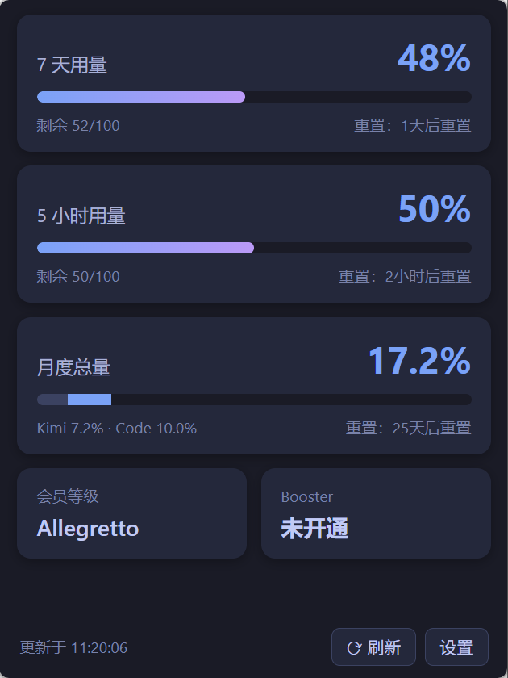
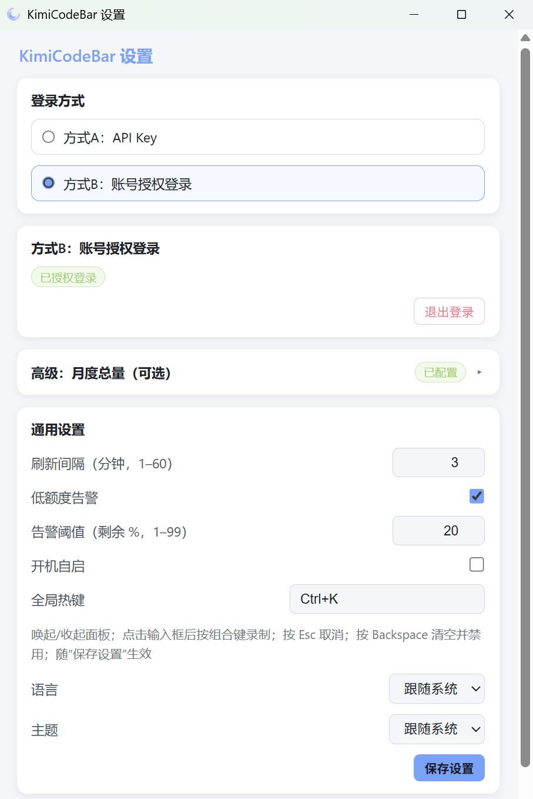
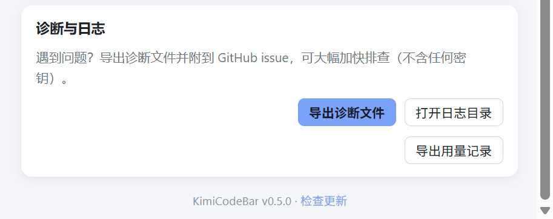

✨免费开源
Kimi Code 用量监控
基于 Tauri 2 + Rust + React 构建：安装包不到 4 MB，运行内存约 10–20 MB。
静默驻留系统托盘，左键一点看额度，快烧完了变红提醒你。
- 托盘常驻 7 天 / 5 小时用量，一点即见
- 低额度预警 图标变红 + 系统通知
社区版本，非 Kimi 官方出品。macOS 用户请移步原版官网。
为 Kimi Code 而生
静默常驻 Windows 系统托盘，不占任务栏、不打断工作流，需要时一眼可见。
系统托盘常驻
左键弹出用量面板（自动定位到托盘图标上方，失焦收起）；右键菜单：刷新 / 设置 / 退出
双窗口用量
7 天窗口 + 5 小时窗口的已用百分比、剩余量、重置倒计时
月度总量
Kimi + Code 每月总用量分列显示（设置中粘贴一次 refresh_token，插件自动续期）
本地消耗统计
扫描本地 wire.jsonl 会话日志，按天统计 token 消耗（今日/昨日 + 近 7 天柱状图 + 今日分模型占比），不依赖 API
用量趋势
近 24 小时双线折线图（7 天 / 5 小时），本地记录 7 天历史，纯事实不预测
会员与钱包
会员档位（Andante / Moderato / Allegretto / Allegro）与加油包（Booster）余额、月度用量
双模式登录
API Key 存入 Windows 凭据管理器；或 OAuth 设备码流程浏览器一键授权、自动续期
自动刷新
默认每 5 分钟轮询（1–60 分钟可调）
低额度预警
任一窗口剩余低于阈值（默认 20%，可调）时托盘图标变红，并推送系统通知（可关闭）
离线可用
最近一次查询结果本地缓存，断网时照常展示，不报错不崩溃
自动更新
静默检查 GitHub Releases，有新版本时面板出现更新徽标，点击直达下载页
全局热键
任意界面一键唤起/收起面板（如 Ctrl+Shift+K，设置页按组合键直接录制，默认关闭）
CLI 模式
kimicodebar.exe --status 输出配额 JSON，可接入脚本与 CI/CD（退出码 0/1/2）
中英双语
界面、通知、托盘提示全覆盖（跟随系统 / 中文 / English）
明暗主题
跟随系统或手动切换；面板背景预设渐变（夜空/极光/紫藤/暖阳）或自定义图片
隐私保护
凭证仅存本机，网络请求只发往 Kimi 官方接口与 GitHub（更新检查）
界面预览
用量面板与设置页实拍（浅色主题）；深色主题与英文界面可在设置中切换。


截图为浅色主题；深色主题与英文界面可在设置中切换。
四种方式，一分钟装好
系统要求：Windows 10 1809+ / Windows 11；依赖 WebView2 运行时（Windows 11 已预装，缺失时安装包会引导安装）。
Scoop
一行命令安装（便携版），以后 scoop update kimicodebar 一键升级：
winget
Windows 官方包管理器，一行命令安装（安装包版），以后 winget upgrade 一键升级：
首次运行可能被 Windows SmartScreen 拦截（应用未购买代码签名证书，属开源软件常见情况）：点击「更多信息」→「仍要运行」即可。
常见问题
更多细节与使用指南见仓库 README。
Q「sk-kimi-」Key 和开放平台的「sk-」Key 是一回事吗？
不是。Kimi Code（kimi.com/code/console）的 Key 以 sk-kimi- 开头；开放平台（platform.moonshot.cn）的 sk- Key 用于通用大模型 API，两者不互通。本工具只接受 sk-kimi- Key（设置页会校验并提示）。
Q会员档位 Andante / Moderato / Allegretto / Allegro 是什么？
Kimi 会员等级的官方命名（音乐速度记号，由慢到快对应由低到高）。工具按 API 返回原样显示；加油包（Booster）是按量付费钱包，订阅额度用完后可用预存余额继续按量使用。
Q断网了会怎样？
面板照常展示最近一次成功查询的缓存数据，顶部出现提示横幅，不会报错或崩溃；网络恢复后自动刷新。
Q我的数据会被上传到别处吗？
不会。所有凭证与配置仅存本机：API Key 在 Windows 凭据管理器，其余在 %APPDATA%\KimiCodeBar\。网络请求只发往 api.kimi.com（用量）、auth.kimi.com（授权）、api.github.com（更新检查）。
你的数据，只在你的电脑上
本地存储
用量数据与登录凭据只保存在本地：API Key 存入 Windows 凭据管理器，其余配置仅存本机，不上传、不同步到任何第三方。
官方直连
所有网络请求仅与 Kimi 官方接口（api.kimi.com / auth.kimi.com）及 GitHub（更新检查）通信，没有中间商，没有统计埋点。
开源可审计
MIT 协议全量开源，每一行代码都在 GitHub 上，欢迎审阅与共建。